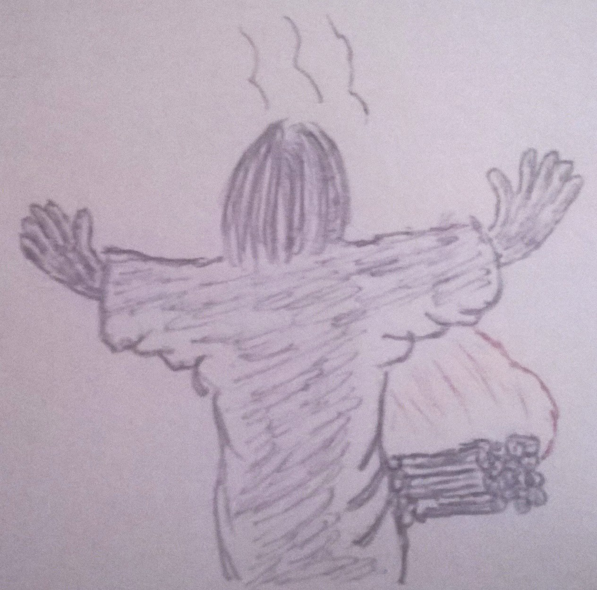

A História de Jó
E o Senhor virou o cativeiro de Jó, quando orava pelos seus amigos; e o Senhor acrescentou, em dobro, a tudo quanto Jó antes possuía. E assim abençoou o Senhor o último estado de Jó, mais do que o primeiro; pois teve catorze mil ovelhas, e seis mil camelos, e mil juntas de bois, e mil jumentas. Também teve sete filhos e três filhas. (Jó 42.10,12,13)
Anterior